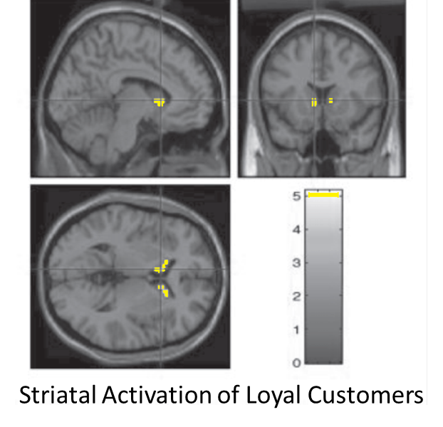

Code
from openai import OpenAI
from dotenv import load_dotenv
_ = load_dotenv()
client = OpenAI()Wedgina Norelus
April 7, 2025

As part of my neuro and society class last semester, we had a guest lecturer for it who studied behavioral neuroscience I think as part of the Wharton school or something like that. He came to the class with findings from some fMRI study that studied people who were loyal to either Apple or Samsung and I think they showed them ads that related to each brand, and it showed that there was increased activity in the amygdala region for people who were loyal to Apple. If I remember correctly this appeared to be the case for a lot of people who were strictly loyal to one brand in other scenarios. It made me wonder whether I could somewhat replicate this with AI. This will be some part of a challenge as it is difficult to ask AI for their opinion because they’re meant to be objective.
prompt1 = "Rank these things based on their importance to the workplace, The printing press, the internet, the smartphone, and generative ai and Provide a reason for why for each"
response1 = client.chat.completions.create(
model="gpt-3.5-turbo",
messages=[{"role": "user", "content": prompt1}],
temperature=0.2
)
output1 = response1.choices[0].message.content
print(output1)The internet is ranked as the most important to the workplace because it has revolutionized communication, collaboration, and access to information. It has transformed the way businesses operate and has opened up new opportunities for remote work, online marketing, and e-commerce.
Generative AI is ranked second as it has the potential to automate tasks, improve decision-making, and enhance productivity in the workplace. It can analyze data, generate insights, and create content, leading to more efficient and effective operations.
The smartphone is ranked third as it has become an essential tool for communication, organization, and access to information in the workplace. It allows employees to stay connected, work on the go, and access important resources quickly and easily.
The printing press is ranked last as it is a more traditional technology that has been largely replaced by digital alternatives. While it was revolutionary in its time for mass communication, it is no longer as essential to the modern workplace as the other technologies listed.
My Take
I took our class as inspiration to ask the LLM as a way to subtly and subjectively ask it to rank the options. In our class for the most part, we actually had the same rankings for the options available but there were some variability, and the answers Chat produced count as that variability because they do not reflect the same rankings we had in class. For the refresher, our rankings were mostly 1. the internet, 2. the printing press, 3. generative ai and 4. smartphone and Chat, gave a response different to this. I’m actually surprised that it ranked the printing press that low as I feel that when it came out it was very revolutionary for its time and is still praised as such in modern day.
prompt2 = "Rank the following tech brands based on their contributions to innovation and impact to consumer lives in the last decade: Apple, Samsung, Google. Provide a reason for each ranking."
response2 = client.chat.completions.create(
model="gpt-3.5-turbo",
messages=[{"role": "user", "content": prompt2}],
temperature=0.2
)
output2 = response2.choices[0].message.content
print(output2)1. Apple
2. Google
3. Samsung
Apple is ranked first due to its significant contributions to innovation in the last decade, particularly with the introduction of groundbreaking products such as the iPhone, iPad, and Apple Watch. These products have had a profound impact on consumer lives, revolutionizing the way we communicate, work, and entertain ourselves.
Google is ranked second for its innovations in various areas such as search, artificial intelligence, and cloud computing. Google's products and services, such as Google Search, Android, and Google Maps, have become integral parts of our daily lives, providing us with information, connectivity, and convenience.
Samsung is ranked third as it has also made significant contributions to innovation in the tech industry, particularly in the smartphone and consumer electronics sectors. However, its impact on consumer lives may not be as profound as Apple and Google, as its products are often seen as more of a competitor to Apple rather than a game-changer in the industry.My Take
I feel like originally I would have ranked Samsung before Google, but then I thought about this outside the context of just phones and I feel like I can now personally agree with this list actually. I even mention in the beginning how researchers really only found activation in the brains of people who are loyal to Apple but they didn’t really find the same effects in people who use Samsung because their consumers don’t have a crazy loyalty to its brand. It doesn’t capture the same loyalty in its users like Apple does, so the part where it mentions it being seen as more of a competitor and not a game changer, made a lot of sense to me. However I do ask it for its opinion on these tech brands in the last decade, and in my experience, I don’t feel that Google really made gigantic advancements or impacts until maybe the last half of the decade. Like I think the Google Phone Pixel thing is actually cool but I don’t really feel like there are many people who talk that much about their products like that as when Samsung was a gigantic competitor against Apple.
prompt3 = "Rank the following based on how revolutionary they have been, Google Search Engine, Tiktok, Youtube, Facebook, Provide a reason for each ranking."
response3 = client.chat.completions.create(
model="gpt-3.5-turbo",
messages=[{"role": "user", "content": prompt3}],
temperature=0.2
)
output3 = response3.choices[0].message.content
print(output3)Google Search Engine is ranked first because it revolutionized the way people access information on the internet. It has become the go-to search engine for billions of users worldwide and has significantly impacted the way we navigate and consume information online.
Youtube is ranked second because it revolutionized the way people consume video content on the internet. It has democratized video creation and sharing, allowing anyone to become a content creator and reach a global audience.
Facebook is ranked third because it revolutionized the way people connect and communicate online. It popularized social networking and has become a dominant platform for sharing updates, photos, and connecting with friends and family.
Tiktok is ranked last because while it has gained immense popularity in recent years, it has not had the same level of impact or longevity as the other platforms listed. It has revolutionized short-form video content and entertainment, but it is still relatively new compared to the others.
My take
Maybe this is the gen z in me talking but personally I would put Facebook last. I feel like a lot of people be against tiktok and/or are against it. It’s literally always being threatened to be banned like everyday because of how powerful it is, people have concerns. I do agree that it hasn’t even been around for that long and that’s why I wouldn’t rank it any higher than 3rd place. I feel like for each of these things aside from Facebook they completely changed the way we consume media in some way, like Google Search Engine was like the very first of its kind to make actually searching the web easy, and is one of the most important platforms that exists in our lives everday to this day. I agree with its reasoning on Youtube and the long way it’s came and how it has completely revolutionized how we consume video media as well. And I believe that tiktok has follows right after that, since it’s really novel in the way we consume multiple forms of media at once, it’s a youtube/twitter/reddit/ instagram, (sometimes even Google) and more all at once essentially. I don’t really feel like Facebook is that revolutionary on its own in getting us to connect with people like that when there were already cool things that did the same back then too like MySpace.